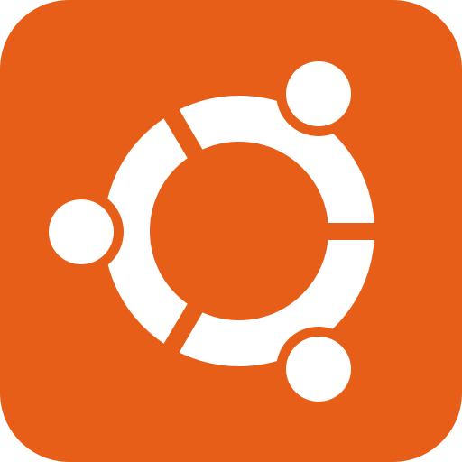

하나씩 골라 주세요. 오른쪽에서 내 서버가 어떻게 만들어지는지 바로 볼 수 있습니다.
RAM은 프로그램이 동시에 펼쳐놓을 수 있는 작업 공간입니다. 웹 서버 실습은 4GB로 충분하지만, 모델 학습은 데이터를 통째로 메모리에 올려야 해서 16GB를 권장합니다.
CPU 코어는 동시에 일하는 작업자 수와 같습니다. 혼자 쓰는 작은 작업은 2명이면 충분하지만, 여러 사람이 큰 데이터를 함께 다루면 작업자를 늘려야 줄이 밀리지 않습니다. 목적과 규모가 서로 다른 사양을 가리키면 더 높은 쪽으로 추천합니다.

운영체제는 서버의 기본 프로그램입니다. 잘 모르겠다면 Ubuntu를 고르세요. 사용하는 사람이 가장 많아서 막혔을 때 검색으로 답을 찾기 쉽습니다. 운영체제는 요금에 영향을 주지 않습니다.
여러 개를 함께 고를 수 있어요. 필요 없으면 "없음"을 고르세요.
도구는 VM 위에 추가로 설치하는 프로그램입니다. 데이터베이스는 서류를 보관하는 캐비닛, Kafka는 부서 사이에 메모를 실시간으로 전달하는 사내 우편실에 가깝습니다. 도구를 여러 개 쓰면 메모리를 나눠 써야 해서, 가장 큰 도구의 권장 RAM에 도구 1개당 GB를 더한 만큼 RAM이 필요합니다. 부족하면 사양을 자동으로 올려서 추천합니다.
환경은 기한이 지나면 자동으로 회수됩니다. 도서관 대출처럼 빌리는 날짜만큼 크레딧이 차감되므로, 필요한 기간만 선택하면 배정된 크레딧을 아낄 수 있습니다. 카드에 표시된 금액은 지금까지 고른 사양 기준 총액입니다.